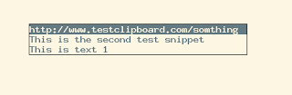
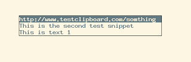

Ratpoison, Clipboard Stack
This is the second post about the Ratpoison window
manager.
How many times have you found your self keeping snippets of text in a text
editor just so you can use them later because your clipboard will be overwritten
with a new selection?
Here is a neat solution using Ratpoison: a clipboard stack.
Using xclip, a simple shell script and the appropriate Ratpoison key bindings
we can accomplish the following:
Note that C-t is Ratpoison’s default escape sequence.
With C-t = the clipboard stack is displayed using ratmen, so we can select
the snippet we want and bring it to the clipboard.

With C-t # a ratmen menu is displayed so we can perform operations on the
stack such as:
- Push: Push the current selection into the stack
- Pop: Take the latest snippet in the stack as the current selection (so we can
paste it with
Ctrl+v as usual)
- Delete: Display the list of snippets in the stack so we can select one to
delete
- Purge: Completely purge the content of the clipboard stack

We get this functionality using the Ratpoison bindings:
bind numbersign exec clipboard_stack.sh menu
bind equal exec clipboard_stack.sh select
This snippet appears in my .ratpoisonrc
file.
Notice how I’ve used key bindings that correspond to the default ones that
tmux use for a similar purpose, this gets us some consistency all across.
Now we can push into the stack any selections we know we could use latter and
just grab them from the list when needed.
This is the second post about the Ratpoison window manager.
How many times have you found your self keeping snippets of text in a text editor just so you can use them later because your clipboard will be overwritten with a new selection?
Here is a neat solution using Ratpoison: a clipboard stack.
Using xclip, a simple shell script and the appropriate Ratpoison key bindings
we can accomplish the following:
Note that C-t is Ratpoison’s default escape sequence.
With C-t = the clipboard stack is displayed using ratmen, so we can select
the snippet we want and bring it to the clipboard.

With C-t # a ratmen menu is displayed so we can perform operations on the
stack such as:
- Push: Push the current selection into the stack
- Pop: Take the latest snippet in the stack as the current selection (so we can
paste it with
Ctrl+vas usual) - Delete: Display the list of snippets in the stack so we can select one to delete
- Purge: Completely purge the content of the clipboard stack
We get this functionality using the Ratpoison bindings:
bind numbersign exec clipboard_stack.sh menu
bind equal exec clipboard_stack.sh selectThis snippet appears in my .ratpoisonrc
file.
Notice how I’ve used key bindings that correspond to the default ones that tmux use for a similar purpose, this gets us some consistency all across.
Now we can push into the stack any selections we know we could use latter and just grab them from the list when needed.